Grand Prix Vejle Ådal 2017

Det blev til en flot 2.plads til Squadra Molteni ved Grand Prix Vejle Ådal 2017. Peter Meinert krydsede klinger med Yeh’ns Dichie (Team Christiania) – Yeh’ns var stærkest og vandt Grand Prix Vejle Ådal for anden gang.
Squadra Molteni stillede til start Niels Bjørnsteen, Peter Meinert, Grane Maaløe, Finn Birk, Christian Vaaben og Max Nielsen. Et stærkt hold, der dog blev ramt af flere alvorlige uheld: Grane punkterede på den lange og kritiske Pavé Vingsted, Christian led af et maveunde hele løbet – og Max van Dunk havde fået den forkerte tobak med i piben for morgenstunden.
Løbet blev givet frit et par kilometer efter Bindeballe. Første pavé blev kørt nogenlunde i samlet flok, men da feltet ramte pave nummer 2, lukkede Meinert og Max alvorligt op. Kaptajn Bjørnsteen røg med i slipstrømmen – og feltet blev splittet.
Efter 2. pave var det etableret en førergruppe på godt 10 mand. Knap havde støvet fra paveen lagt sig, før Col de Bøgevej og Col de Refgårde rejste sig – og krævede sine ofre.
– Jeg havde fået den forkerte pibetobak med på vej ud af døren, lød det fra Max Van Dunk. Jeg fik stoppet snaden med en gang Sweet Dublin – og den gik sku lige i benene.
På Col de Refgårde rykkede Yeh’ns Dichie og Peter Meinert væk. Morten Mejsen (Peugeot), Jens Peter Clausen (Fredericia CC), Jeppe Theimer (Puch) og Niels Bjørnsteen (Squadra Molteni) dannede en forfølgergruppe.
Yeh’ns Dichie stak senere fra Meinert, og kunne køre sin anden sejr hjem. Meinert kunne holde de hårdt jagende Mejsen, Clausen og Theimer væk, og kørte en fornem 2. plads hjem til Squadra Molteni.
– Morten Mejsen kørte stærkt, aggressivt og angrebsivrigt i forfølgergruppen – nærmest som en franskmand, der ikke har fået sin formiddags-Pastis, fortæller Bjørnsteen. Men det lykkedes mig, at sidde hård på ham.
Det blev dog Jens Peter Clausen, som vandt spurten om 3. pladsen. Bjørnsteen forsøgte sig ellers med en lang spurt godt 600 meter før mål, men blev hentet omkring 100 meter før stregen.
Til trods for forkert tobak, maveunde og punktering leverede Max van Dunk, Christian og Grane og et bund solidt stykke arbejde – og Finn styrede tropperne bagfra med overblik og autoritet.
Carsten Bagmand & Co leverede et godt og hyggeligt arrangement. Til trods for, at ruten blev lavet om kun 15 minutter før start pga. rally på nogle lokale veje, blev der kørt race på en god og krævende rute.

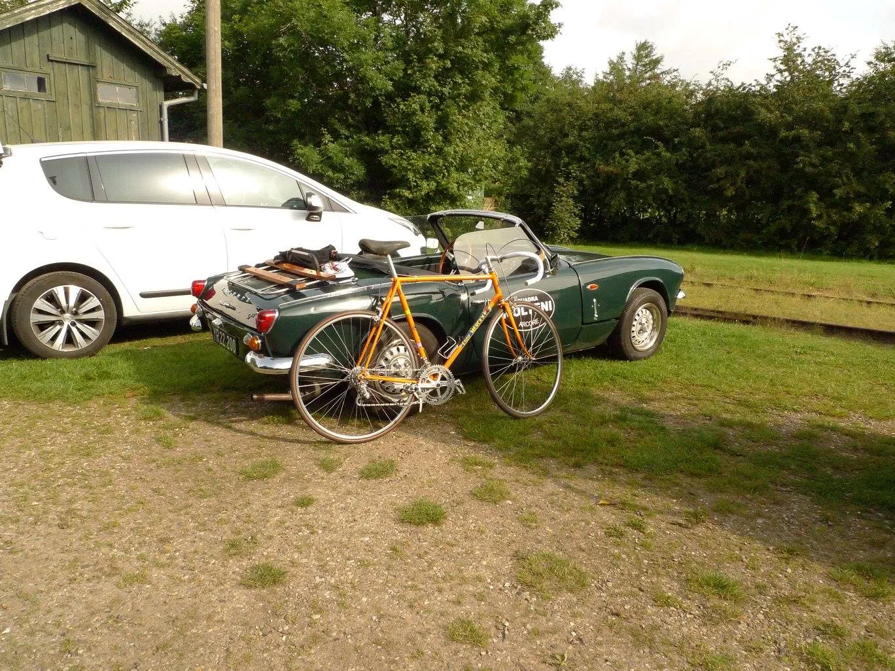

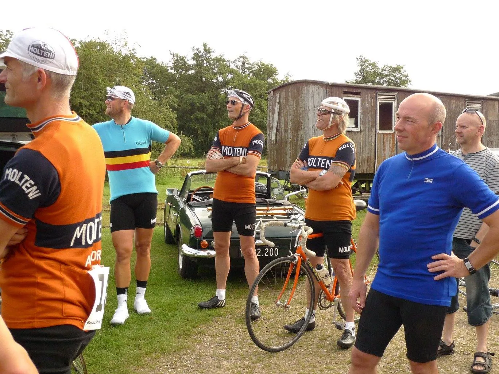

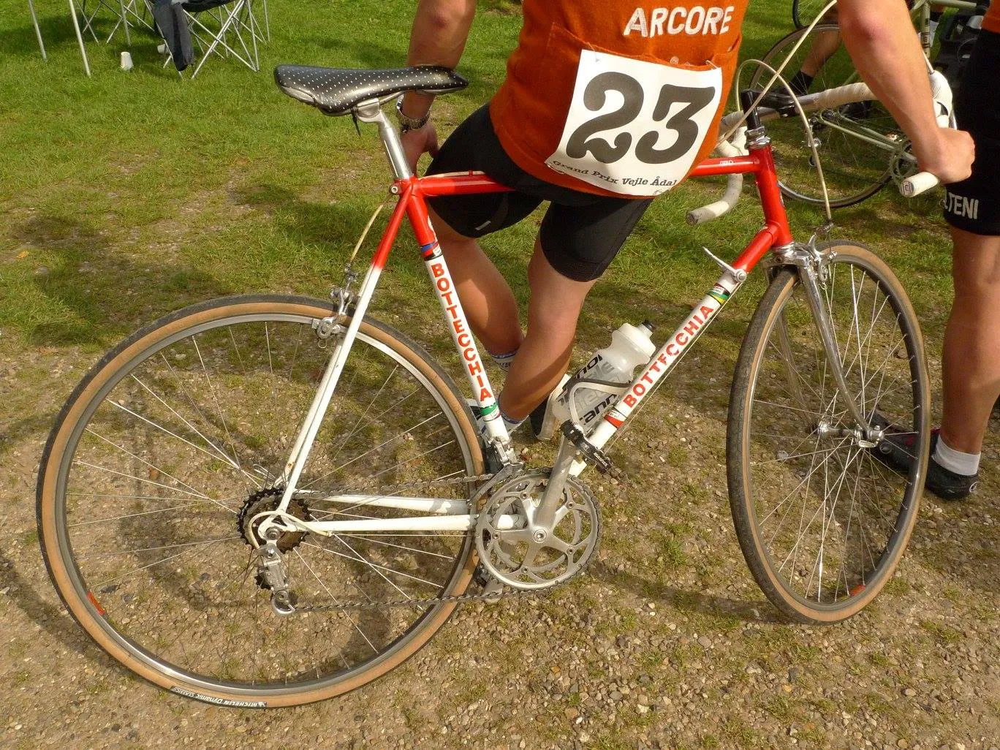

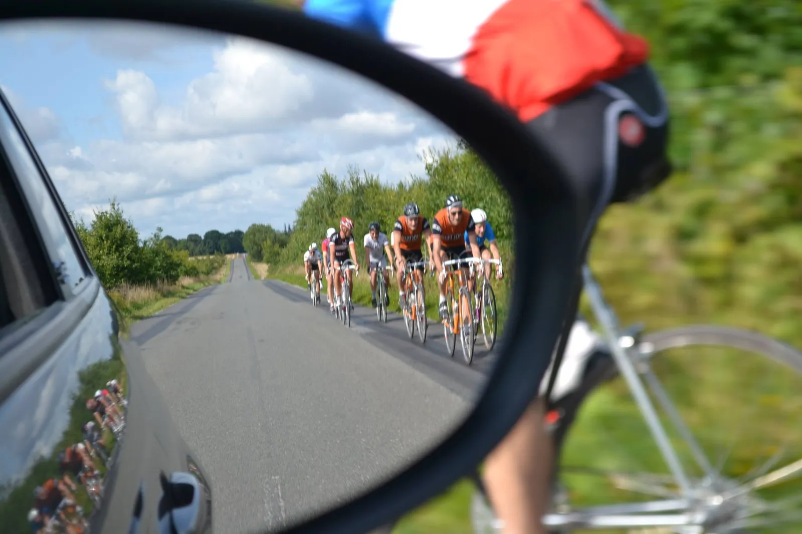

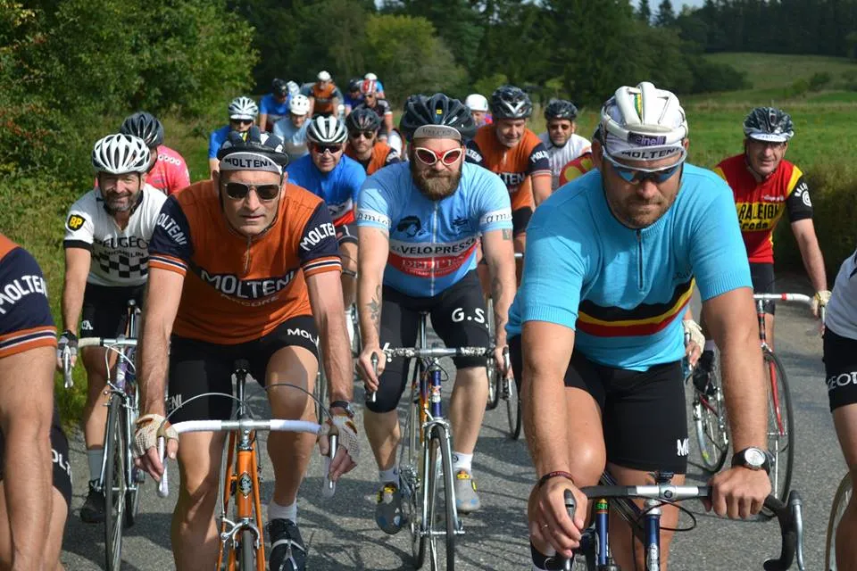

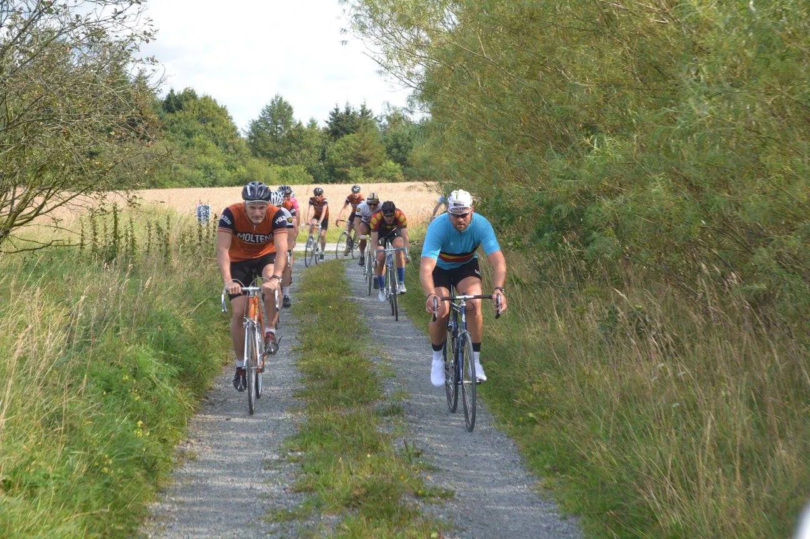

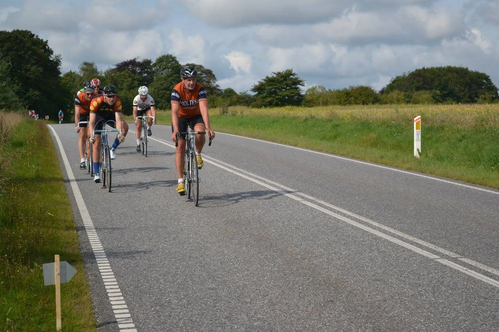

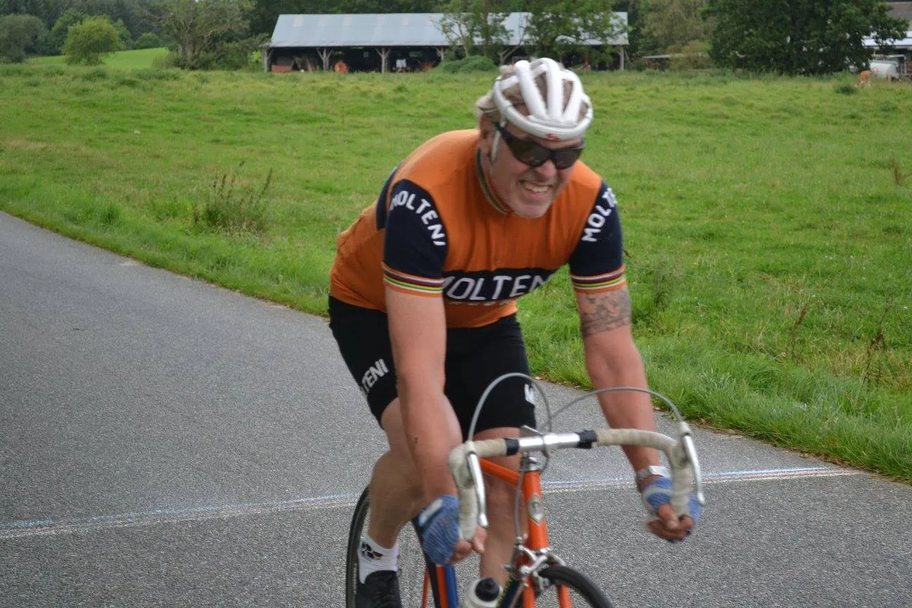

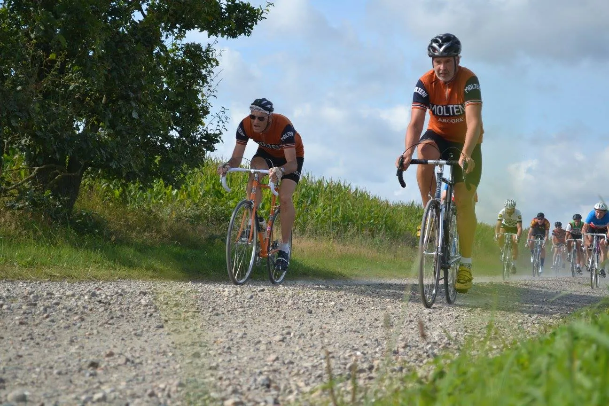

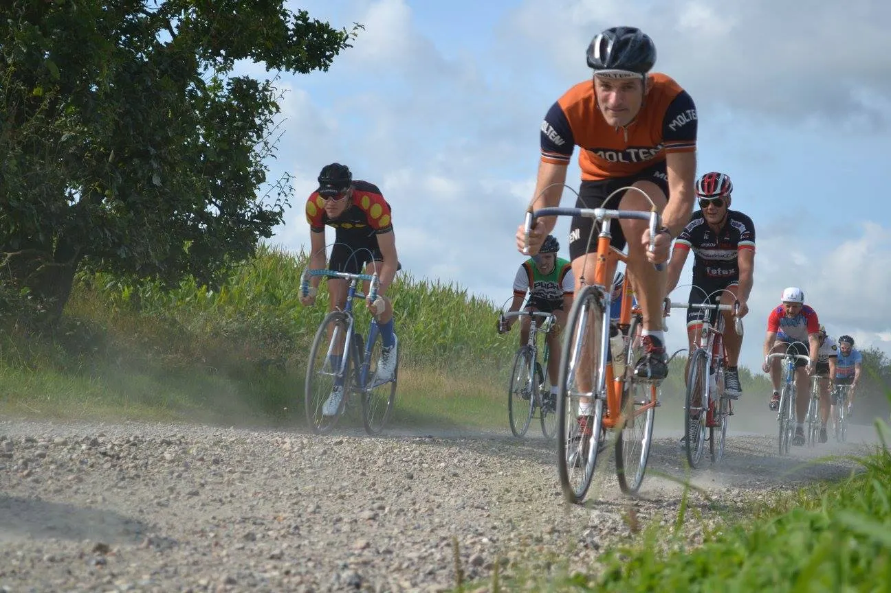

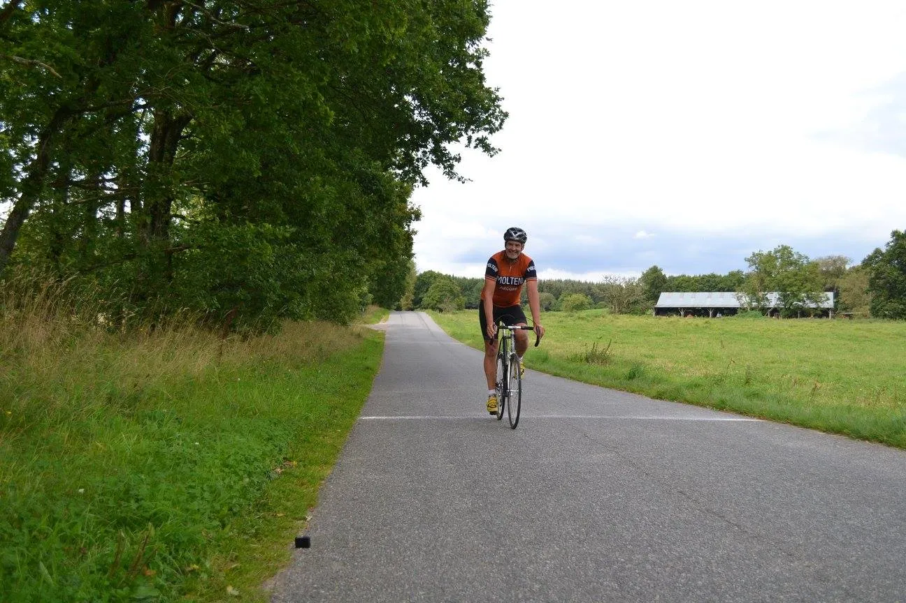

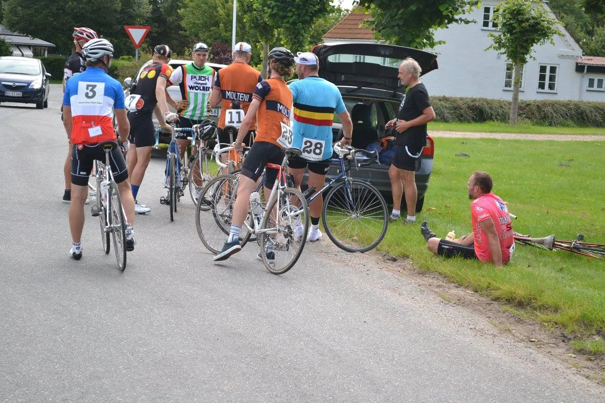
Fotos: GPVÅ, Carsten Bagmand og Per Hansen
Flere fotos på: https://www.facebook.com/pg/grandprixvejleaadal/photos/